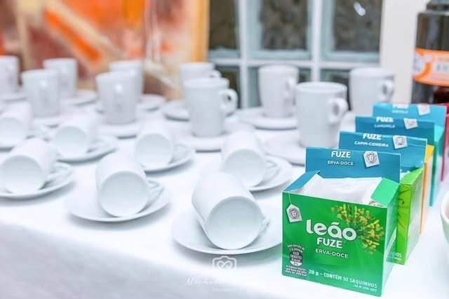
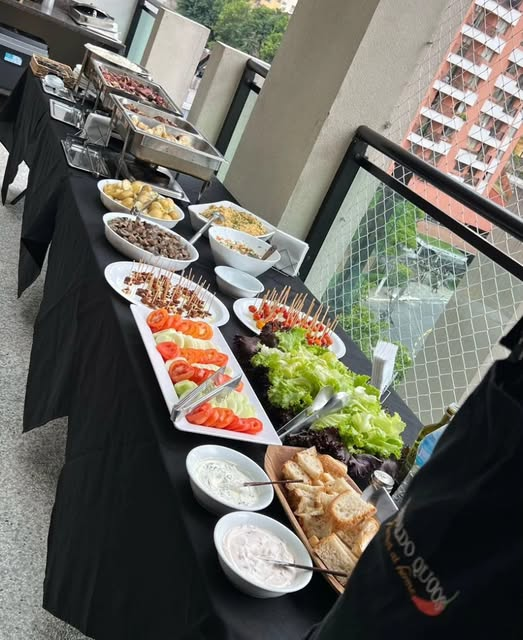
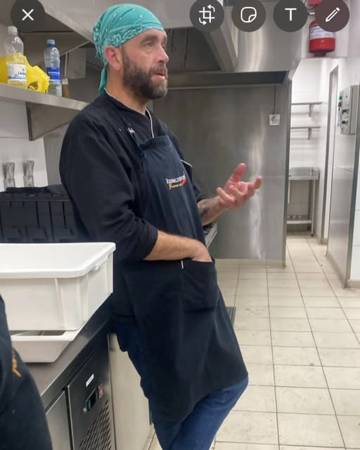
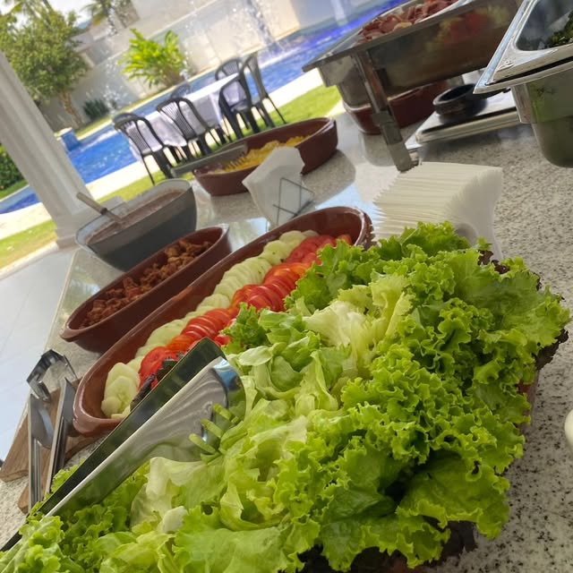
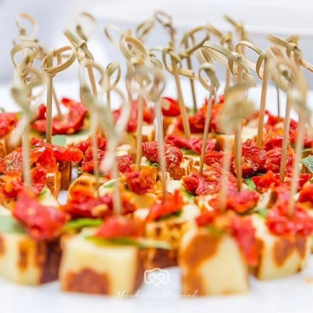
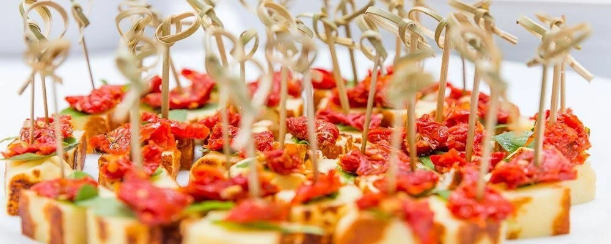
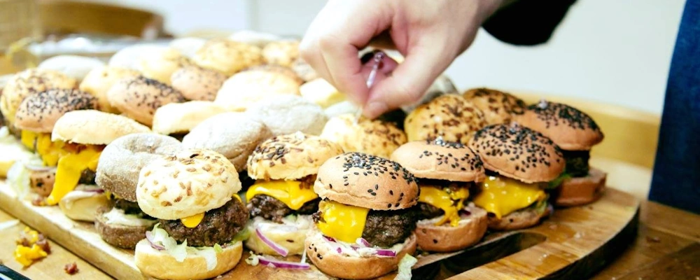

Cozinha móvel personalizada
Seu evento,
à sua maneira.
Uma experiência gastronômica autoral, preparada no local e desenhada em cada detalhe para receber os seus convidados.
18
anos servindo
excelência em sabor
excelência em sabor
18 anosde experiência
Capital · Interior · Litoralatendimento em São Paulo
100% personalizadomenu e serviço sob medida
01 A experiência
Gourmet at home
O restaurante
vai até você.
Mais do que servir, criamos o clima, o sabor e a memória que ficam depois do último prato.
Da escolha do cardápio à finalização no local, cada etapa é pensada para o estilo do seu evento, o perfil dos convidados e a atmosfera que você deseja criar.
Entenda como funciona
Ingredientes selecionados
Finalização no local
Serviço personalizado


Chef Reinaldo Quoos03 O chef
Paixão sem medida
Cozinhar começou
como gosto. Virou ofício.
“A arte do Gourmet está em oferecer ao paladar o sabor que os olhos prometem.”
Por puro gosto, o ato de cozinhar entrou na vida de Reinaldo Quoos como uma distração. Ao longo do tempo, virou profissão — e há 18 anos transforma encontros em experiências cheias de sabor.
Acompanhe os bastidores04 Como funciona
Simples para você.
Impecável para todos.
Você aproveita os convidados. Nós cuidamos para que o serviço acompanhe o ritmo do evento do começo ao fim.
-
01
Uma boa conversa
Entendemos ocasião, local, data, número de convidados, preferências e necessidades especiais.
-
02
Curadoria do evento
Montamos uma proposta de menu e serviço coerente com o seu momento, sem excessos ou improvisos.
-
03
Cozinha em cena
Preparamos e finalizamos no local para entregar frescor, sabor e uma experiência próxima dos convidados.




Fotos reais de eventos, preparos e cardápios Reinaldo Quoos.
06 Antes de começar
Algumas respostas.
E uma conversa.
Se a sua dúvida não estiver aqui, fale diretamente com o chef.
Quais regiões são atendidas?
Atendemos São Paulo Capital, interior e litoral. A disponibilidade e a logística são confirmadas de acordo com a data e o local do evento.
O cardápio pode ser personalizado?
Sim. O menu é criado a partir do perfil do evento, do número de convidados, das suas preferências e de eventuais restrições alimentares.
Para quais tipos de evento o serviço é indicado?
Encontros em casa, confraternizações, aniversários, celebrações, coffee breaks e eventos corporativos. O formato é adaptado à ocasião.
Com quanto tempo de antecedência devo falar?
Quanto antes, melhor para planejar todos os detalhes. Envie a data desejada pelo WhatsApp e confirmaremos a disponibilidade.
07 Seu próximo evento
Vamos criar juntos?
Conte como você
imagina esse momento.
Preencha os detalhes essenciais. Ao enviar, sua mensagem será preparada para conversar diretamente com Reinaldo pelo WhatsApp.
WhatsApp 11 94019-7460